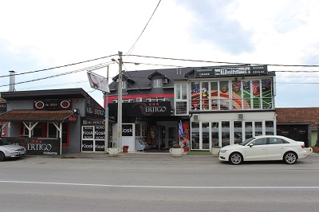
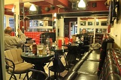
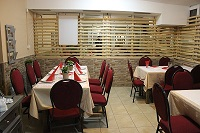
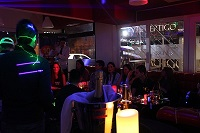
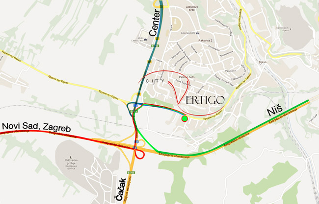

Vila "VERTIGO" - Beograd raspolaže sa 43 sobe, kapaciteta 110 ležajeva različitih struktura od dvokrevetnih do osmokrevetnih.
Sve sobe su klimatizovane, sa sopstvenim kupatilom, toplom vodom 24h, centralnim grejanjem i LCD televizorom sa kablovskom televizijom.
Kompletan objekat je pokriven besplatnim bežičnim internetom.
Vila "VERTIGO" - Beograd pruža usluge smeštaja na dnevnom i mesečnom nivou.
Naše profesionalno i diskretno osoblje Vam stoji na raspolaganju 24h.

Vila "VERTIGO" - Beograd raspolaže sa 43 sobe, kapaciteta 110 ležajeva različitih struktura od dvokrevetnih do osmokrevetnih.
Sve sobe su klimatizovane, sa sopstvenim kupatilom, toplom vodom 24h, centralnim grejanjem i LCD televizorom sa kablovskom televizijom.

Vila "VERTIGO" - Beograd raspolaže sa 43 sobe, kapaciteta 110 ležajeva različitih struktura od dvokrevetnih do osmokrevetnih.
Sve sobe su klimatizovane, sa sopstvenim kupatilom, toplom vodom 24h, centralnim grejanjem i LCD televizorom sa kablovskom televizijom.

Vila "VERTIGO" - Beograd raspolaže sa 43 sobe, kapaciteta 110 ležajeva različitih struktura od dvokrevetnih do osmokrevetnih.
Sve sobe su klimatizovane, sa sopstvenim kupatilom, toplom vodom 24h, centralnim grejanjem i LCD televizorom sa kablovskom televizijom.

Vila VERTIGO se nalazi na samoj obilaznici Beograda, iz smera od Niša ka Zagrebu, 100m pre izlaska na Ibarsku magistralu.
Iz smera Niša, preko Bubanj potoka, na semaforu kod Resnika sa desne strane se nalazi bilbord koji ukazuje na skretanje nakon 200m.
Tim putem skreće se desno na staru obilaznicu i prolazi kroz stari tunel i tačno se dolazi do Vile Vertigo.
Udaljenost od aerodroma - 20min.
Udaljenost od centra grada - 18min.
Udaljenost od sajma - 14 min.
{kind=link}
{kind=link}